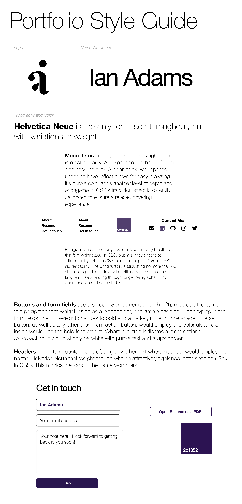

In creating my portfolio and the branding for it, the goal was to keep things very spare. I grew up going to art galleries with my parents, and they always said the walls were white and the rooms extra plain so as to best highlight the work on display. I therefore aimed for almost no color and a simple glyph for my logo based on my initials. I didn't want my portfolio branding to compete at all with the branding in each of my case studies.
Above are some sketches I made to explore logo ideas. I'd seen using one's name or initials as a common branding approach for designers and figured I would go that route, but try not to make it too prosaic. I gradually investigated ways to combine a bold, lowercase, serif-font (Times) “i” and “a”. Preference testing several ideas on UsabilityHub.com and some in-person feedback revealed the need to make the glyph more clearly an “i” and “a” combination rather than too predominantly one letter or the other.
After further experimentation, I found a solution to making it look how I wanted. Inspired by the rather analog craft of traditional Japanese calligraphy, I found placing a small teardrop shape where the bowl of the lowercase “a” would be solved the problem. By hinting at the “a” shape just enough, the glyph managed to be closer to its own unique shape evenly combining an “i” and an “a”.

Tap here to open style guide in a new tab
Beyond branding, I created a straightforward navigation for the site to enable easy browsing through and within the case studies. Based on one user's feedback, I added the “View work” upper-right menu item on screens other than the home screen. This reminded me that my typical user is a busy design director, recruiter, or hiring manager needing to quickly get a sense of my work and navigate smoothly between case studies. Within the case studies, I used plenty of large images interspersed with digestible sections of well-spaced explanatory text to showcase my process. I also added a "sticky" top navigation bar using JavaScript to aid moving between the design process steps within each case study.
Lastly, I wanted to credit (in addition to Bloc.io's fine curriculum) Wes Bos's CSS Grid course at
cssgrid.io for quickly and enjoyably giving me the skills to build this portfolio by hand! It was a rewarding experience to be able to create the open layout I wanted using CSS Grid and also make it responsive.